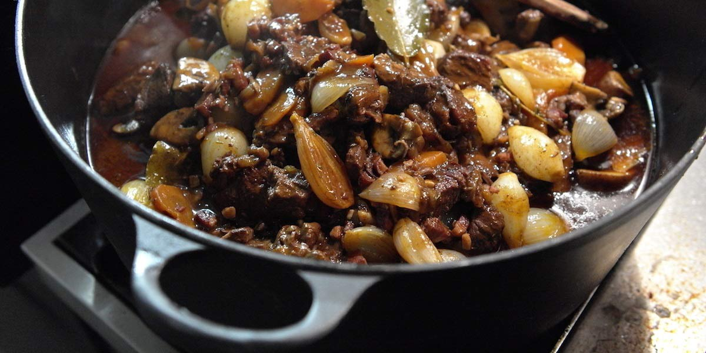

Boeuf Bourguignon
Recipe Specification
Ingredients List
| Ingredients | Quantity |
|---|---|
| Chuck Steak | 900g |
| Pancetta | 260g |
| Chestnut Mushroom | 120g |
| Vegetable Oil | 45ml |
| White Onion | 1x1 |
| Plain Flour | 30g |
| Red Wine | 400ml |
| Garlic Cloves | 2 Cloves |
| Thyme | 2 Sprigs |
| Bay Leaf | 1x1 |
Yield: 5-6 portions
Preparation
- Cut chuck steak into 2 inch pieces.
- Cut pancetta into small cubes.
- Cut mushrooms into quarters.
- Peel and slice white onion.
- Peel and crush garlic cloves.
Cooking Instructions
- Place a medium cast iron pan over a medium/high heat and add 25ml vegetable oil.
- Sear beef until evenly brown and transfer beef to a separate container.
- Add onions to pan and fry for 3-4 minutes.
- Return beef to the pan and sprinkle with plain flour. Ensure that meat and onions are evenly coated with flour.
- Add red wine and stir before adding garlic, thyme, bay leaf and a teaspoon of salt and pinch of pepper.
- Bring to the boil and reduce to the simmer for 2 hours with lid on.
- Whilst meat is cooking, place a frying pan on a medium/high heat and add 20ml vegetable oil.
- Add pancetta and mushrooms to pan and fry until golden brown. Set aside until beef is cooked.
- Once beef is cooked and tender, remove lid and reduce cooking liquid by half. Add mushroom and pancetta before removing thyme and bay leaf.
- Season to taste before serving.

Serving Suggestions
Serve boeuf bourguignon with mash potatoes and steamed carrots.
Storing instructions
Allow to cool to room temperature. Consume within 4 days of making. Store in the fridge
Reheating Instructions
Place in the microwave for 1-2 minutes.